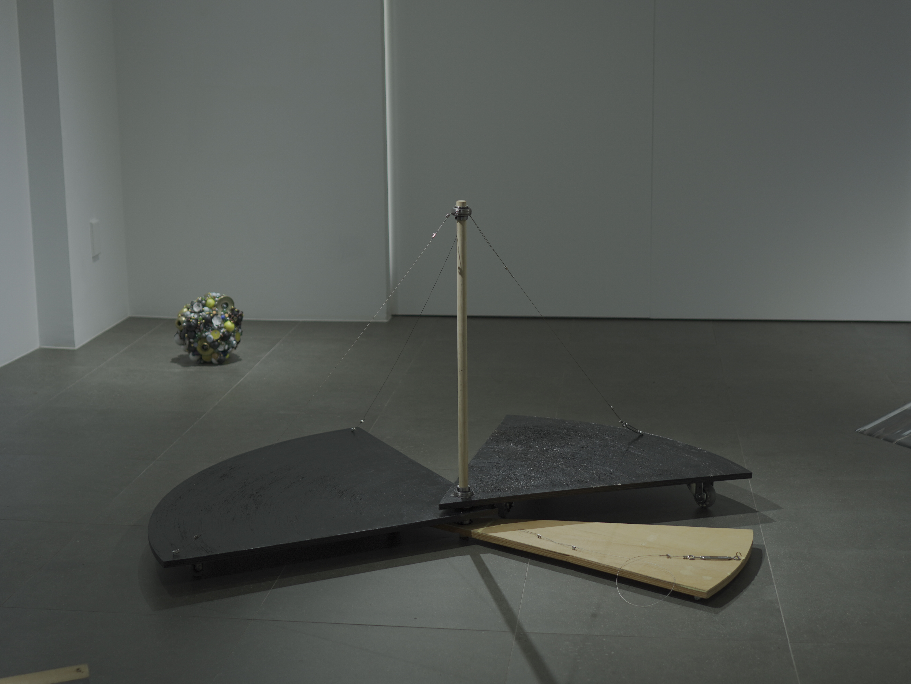
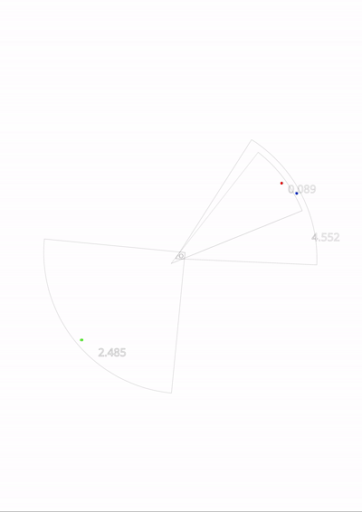
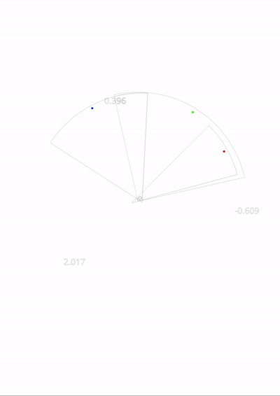

<행동반경>
합판, 목재 환봉, 와이어, 옵셋 잉크 등 혼합 매체. 가변 크기. 2026.
<행동반경>은 보이지 않는 요소가 신체의 행동 반경에 영향을 미치어 남긴 흔적에 대해 말한다. 작업은 낯선 상황, 공간에 놓여진 인물의 행동을 관찰한 경험에서 비롯되었다. 어떠한 물리적 장애물이나 제시된 사회적 제약이 없었음에도 불구하고 행위자는 스스로 행동의 반경을 좁혀들어갔다. 스스로 정해진 반경 내에서만 머무르고, 다른 공간에 다녀와도 결국엔 다시 돌아와 서 있는 행동이 반복되었다. 행위자에게 내재된 어떠한 것이, 행위자 스스로 행동 가능한 반경에 제한을 두었던 현상, 그 흔적을 구조적 형태로 나타냈다.


